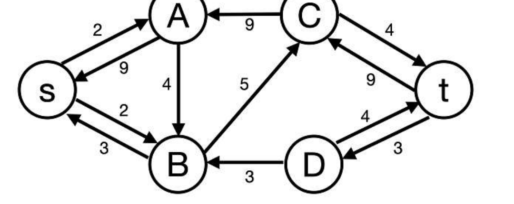
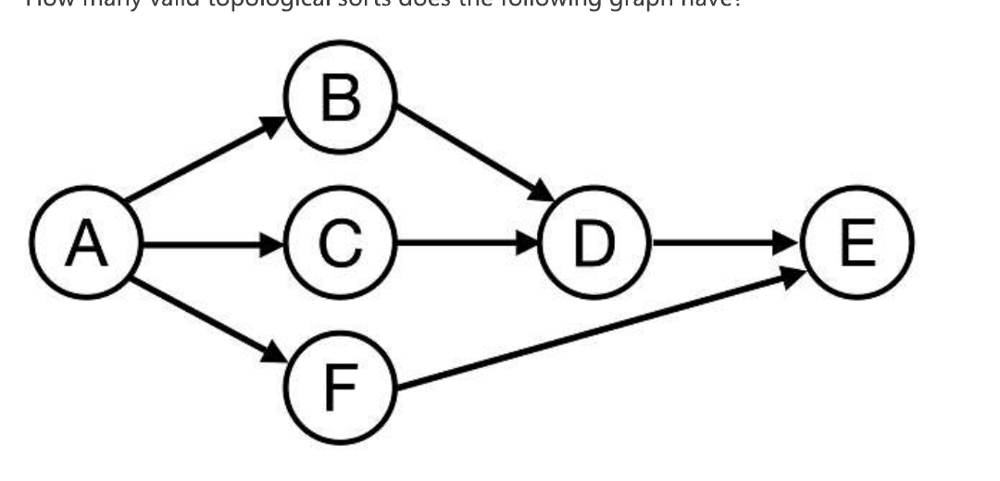
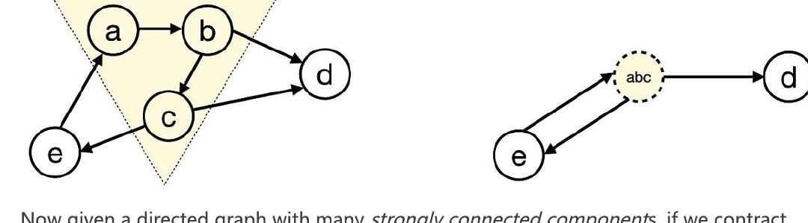
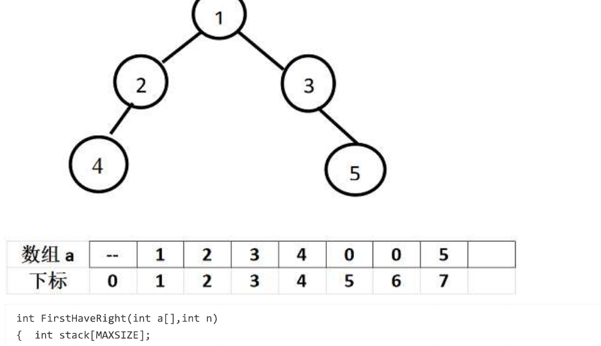

浙江大学《数据结构基础》期末考试试卷
2024-2025 学年春夏学期 · 重刷版（已去除答案）
一、判断题（每题 2 分，共 10 题）
R1-1 2 分
To find a minimum spanning tree in a dense graph, Prim's algorithm is more suitable than Kruskal's.
TF
R1-2 2 分
In an undirected graph, a vertex $v$ is an articulation point iff there exists a pair of vertices $u$ and $w$ (both different from $v$) so that every path between $u$ and $w$ passes through $v$.
TF
R1-3 2 分
Given a min-heap with unique keys, if $i < j$, then the element $p$ in level $i$ must be smaller than $q$ in level $j$.
TF
R1-4 2 分
Suppose that each single node in a disjoint set initially has height 0, the height of the resulting disjoint-set tree formed by performing union-by-height on $n$ nodes may exceed $\lfloor \log_2 n \rfloor$.
TF
R1-5 2 分
If quadratic probing is used in hashing, then a new element can always be inserted if the hash table is at least half empty.
TF
R1-6 2 分
After performing one pass of radix sort on {11, 56, 25, 61, 79, 27, 51}, the result could be {11, 25, 27, 51, 56, 61, 79}.
TF
R1-7 2 分
During the insertion sort process, the order of magnitude of the number of comparisons is independent of the initial state of the sequence.
TF
R1-8 2 分
$114514^N = O(N!)$
TF
R1-9 2 分
If a complete binary tree has n+1 nodes in the last level and n nodes in the second last level, then the total number of nodes in the tree must be 3n.
TF
R1-10 2 分
If the five integers {1,2,3,4,5} are inserted into an initially empty binary search tree in any order starting with 3, the resulting trees will all have the same height.
TF
二、单选题（每题 3 分，共 20 题）
R2-1 3 分
Given a tree of degree 3, if there are 49 nodes of degree 2, and 25 nodes of degree 3, then how many leaf nodes are there?
A. 101
B. 100
C. 150
D. 50
R2-2 3 分
Which of the following statements is correct regarding a binary search tree storing unique integers?
A. The integers 8 and 9 may be at the same level.
B. If 8 and 10 are at the same level, then 9 must be their parent node.
C. If 8 and 10 are at the same level, then 9 must not be their parent node.
D. None.
R2-3 3 分
For a binary tree, if its post-order travel sequence is { 1, 3, 2, 6, 5, 7, 4 }, and its in-order travel sequence is { 1, 2, 3, 4, 5, 6, 7 }, then which of the following statement is TRUE?
A. This is a complete binary tree.
B. 6 is the parent of 5.
C. This is a binary search tree.
D. 3 is the parent of 2.
R2-4 3 分
In a doubly linked circular list, how many pointers must be updated to insert $q$ after $p$?
R2-5 3 分
Design an algorithm to determine whether the parentheses () in an expression are properly matched. Which data structure is the most suitable for this task?
A. Sequentially stored linear list
B. Queue
C. Stack
D. Heap
R2-6 3 分
Suppose that the level-order traversal sequence of a min-heap is { 5, 18, 29, 23, 64, 47, 36}. After calling DeleteMin twice, what will be the post-order traversal of the resulting heap after it has been adjusted?
A. 47, 36, 64, 23, 29
B. 47, 64, 36, 23, 29
C. 47, 64, 29, 36, 23
D. 47, 64, 36, 29, 23
R2-7 3 分
It is known that a 3-heap is a heap whose nodes have 3 children. In a min-3-heap with 2025 elements, which one of the following indices is NOT a possible position for the maximum key?
A. 675
B. 676
C. 1012
D. 1013
R2-8 3 分
For an in-order threaded binary tree, if the post-order and in-order traversal sequences are FDEBGCA and FDBEACG, respectively. Which pair of nodes' left links are both threads?
A. E and G.
B. B and G.
C. C and D.
D. D and E.
R2-9 3 分
Consider the following operations performed on an initially empty Binary Search Tree (BST):
Insert: 50, 30, 70, 20, 40, 60, 80
Delete: 50 (replaced with its in-order successor)
Insert: 55
After these operations, which node will be the in-order predecessor of 60 in the final BST?
A. 30.
B. 40.
C. 55.
D. The in-order predecessor does not exist for 60.
R2-10 3 分
The array representation of the disjoint sets is given by { 3, 3, 4, 7, 4, -3, -6, 6, 8, -2, 10 }. Keep in mind that the elements are numbered from 1 to 11, and the depth of the root is 0. After invoking Union(Find(9), Find(11)), Union(Find(11), Find(3)) with union-by-size and path compression, what is the maximum depth of all the nodes?
R2-11 3 分
Which of the following statements about hashing is incorrect?
A. In hashing with quadratic probing to resolve collisions, a new element can definitely be inserted if the table size is 14 and 7 cells are occupied.
B. If an insertion into the hash table fails, rehashing is necessary, and the new table size is about twice the original size.
C. If in double hashing $\mathrm{Hash}_2(k) = k^2$, then double hashing effectively becomes quadratic probing.
D. the expected number of probes for insertions is equal to unsuccessful searches in linear probing method.
R2-12 3 分
Insert {26,30,13,17,40,21,22,10} one by one into an initially empty hash table of size 11 with the hash function $H(Key) = Key \% 11$, and linear probing is used to resolve collisions. After Insertion, what is the expected number of probes for an unsuccessful search?
A. $\dfrac{28}{11}$
B. $\dfrac{25}{11}$
C. $\dfrac{27}{11}$
D. $\dfrac{24}{11}$
R2-13 3 分
To compute the shortest path in a weighted graph, Dijkstra's algorithm using a min-priority queue is a popular choice. For this algorithm, what is the total time spent on running the relaxation step "decrease the distance of each vertex adjacent from the current visited one"?
A. $O(|E|)$
B. $O(|V| * |E|)$
C. $O(|V| * \log|V|)$
D. $O(|E| * \log|V|)$
R2-14 3 分
We are executing an algorithm to find the maximum flow of a given network. Currently, we have found several augmenting paths to send 12 flow from $s$ to $t$, and we show the updated residual graph in the following figure.

So what is the maximum flow we can send from $s$ to $t$?
R2-15 3 分
Given a weakly-connected directed graph, what condition ensures that an Eulerian Circuit exists?
A. All vertices have equal in-degree and out-degree.
B. Exactly one vertex has out-degree = in-degree + 1, one vertex has in-degree = out-degree + 1, and all the rest vertices have equal in-degree and out-degree.
C. Exactly two vertices have odd total-degree, and all the rest vertices have even total-degree.
D. All vertices have even total-degree.
R2-16 3 分
How many valid topological sorts does the following graph have?

R2-17 3 分
The following figure illustrates how to contract a subgraph (shown in dashed line) into a vertex.

Now given a directed graph with many strongly connected components, if we contract each component into a single vertex, which property does the resulting graph MUST have?
A. a complete graph
B. a disconnected graph
C. a directed acyclic graph
D. a binary tree
R2-18 3 分
Using the direct insertion sort algorithm to sort the following four lists in ascending order, the one with the fewest number of comparisons is:
A. 67,13,20,55,40,27,6,31
B. 6,13,27,20,40,31,55,67
C. 13,20,6,27,31,67,55,40
D. 55,31,40,27,6,13,67,20
R2-19 3 分
Given that the key sequence {7, 9, 14, 19, 25, 20, 16, 21} is a min-heap, after inserting the key 2 and adjusting accordingly, the resulting min-heap is:
A. {2,14,7,9,25,20,16,21,19}
B. {2,7,14,19,20,16,21,9,25}
C. {2,9,14,7,20,16,21,25,19}
D. {2,7,14,9,25,20,16,21,19}
R2-20 3 分
Which of the following options is not a possible result after the second pass of quicksort?
A. 3,7,11,9,13,17,19
B. 3,17,11,13,9,7,19
C. 7,3,11,9,17,13,19
D. 9,3,7,11,17,13,19
三、程序填空题（每空 3 分）
R5-1 6 分
Given the head of a singly linked list, swap every two adjacent nodes if the value of the first node is greater than the value of the second node and the value of the first node is even. If the number of nodes is odd, the last node remains unchanged. Complete the two blanks in the code below.
#include <stdio.h>
#include <stdlib.h>
struct ListNode {
int val;
struct ListNode *next;
};
struct ListNode* swapIfGreaterAndEven(struct ListNode* head) {
struct ListNode dummy;
dummy.next = head;
struct ListNode *prev = &dummy;
while (prev->next != NULL && prev->next->next != NULL) {
struct ListNode *first = prev->next;
struct ListNode *second = first->next;
if ( ) { /* 空 1 (3 分) */
first->next = ; /* 空 2 (3 分) */
second->next = first;
prev->next = second;
prev = first;
} else {
prev = second;
}
}
return dummy.next;
}
R5-2 6 分
Find the first node with a right child (2)
In a binary tree represented as a complete binary tree, find the first node with a right child encountered during an in-order traversal. If no such node exists, return -1; otherwise, return that node's value.
For example: a binary tree stored in this format (as illustrated in the figure) has its root node at array index 1, with missing nodes represented by 0 in the array.
Please complete the function int FirstHaveRight(int a[], int n), where parameter n is the index of the last element in array a (e.g., n = 7 in the provided example). All elements after the last element of array a are initialized to 0. The algorithm in this function is similar to iterative implementation of in-order traversal.

int FirstHaveRight(int a[],int n)
{ int stack[MAXSIZE];
int top=-1, tree=1,treeRight;
for ( ; ; ) {
for ( ; tree<=n; tree = ){ /* 空 1 (3 分) */
if (a[tree]!=0) stack[++top]=tree;
else break;
}
if (top==-1) return -1;
else tree = stack[top--];
treeRight=2*tree+1;
if ( ) break; /* 空 2 (3 分) */
else tree = treeRight;
}
return a[tree];
}
四、函数题
R6-1 Finding Independent Set 8 分
Given a simple undirected graph $G = (V, E)$. An independent set of $G$ is a set $S \subseteq V$ such that no two members of $S$ are connected by an edge in $E$. Finding the maximum independent set of $G$ is an NP-hard problem. Here you are supposed to implement a greedy heuristic to find a near-maximum independent set.
The algorithm works in the following way:
- Collect any one unvisited vertex $v$ into $S$.
- Delete all the vertices (and all the edges incident on them) that are adjacent to $v$ from $G$.
- Repeat steps 1 and 2 until there is no unvisited vertex left in $G$.
In order to obtain the unique solution, when there are many options in step 1, you must always choose the vertex with the smallest index.
Format of functions:
int Independent_Set( MGraph G, int S[] );
Here MGraph is defined as the following:
typedef struct GNode *PtrToGNode;
struct GNode{
int Nv; /* number of vertices */
int Ne; /* number of edges */
int G[MaxVertexNum][MaxVertexNum]; /* adjacency matrix */
};
typedef PtrToGNode MGraph;
where MaxVertexNum is a constant defined by the judge.
The indices of the vertices in the resulting independent set is stored in the array int S[]. Note that the vertices are indexed from 1 to the number of vertices Nv. However, the indices of the adjacency matrix G starts from 0.
The function Independent_Set is supposed to follow the above algorithm to produce an independent set, save the results in S, and return the number of vertices in S.
Sample program of judge:
#include <stdio.h>
#include <stdlib.h>
#define MaxVertexNum 1000
typedef struct GNode *PtrToGNode;
struct GNode{
int Nv; /* number of vertices */
int Ne; /* number of edges */
int G[MaxVertexNum][MaxVertexNum]; /* adjacency matrix */
};
typedef PtrToGNode MGraph;
MGraph Build_Graph(); /* implemented by judge */
int Independent_Set( MGraph G, int S[] );
int main()
{
int i, n, S[MaxVertexNum];
MGraph G;
G = Build_Graph();
n = Independent_Set(G, S);
printf("%d", S[0]);
for (i=1; i<n; i++) printf(" %d", S[i]);
return 0;
}
/* Your function(s) will be put here */
Sample Input:
8 7
1 5
5 4
4 2
2 3
3 6
6 1
6 2
Sample Output:
1 2 7 8
Note: This method can help us find an independent set, but not necessarily a maximum independent set. For example, the maximum solution of the sample graph is {1, 3, 4, 7, 8}.
代码长度限制 16 KB · 时间限制 400 ms · 内存限制 64 MB · 语言 C (gcc)
你的作答：
int Independent_Set( MGraph G, int S[] )
{
}